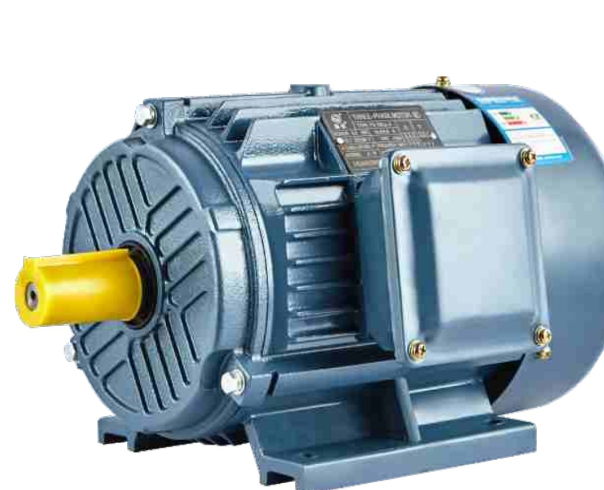

YE3 系列三相异步电动机，符合 GB18613-2020 三级能效（IE3）。0.12kW 到 375kW，2/4/6/8/10 极全覆盖（厂家概述标称机座 63–355、功率至 400kW）。下面可以直接按功率和转速筛型号。
知道要几个千瓦、几极，直接筛；知道型号就直接搜。
配水泵最常用 2 极和 4 极；输送、搅拌类低速设备多用 4 极或 6 极。不确定就报设备和用途，我们帮你配。
三相异步电动机里的高效节能款。同样干活，比老式 Y/Y2 系列省电——效率符合国标 GB18613-2020 规定的 3 级能效（国际 IE3）。现在很多工程验收和节能改造项目直接要求上 IE3。
F 级绝缘、IP55 防护，粉尘和水汽环境也能用；噪声低、振动小，适合需要长期连续运行的场合。

电机、减速机、水泵在同一家配齐，功率、转速、接口我们帮你对好，出问题也只找一家。